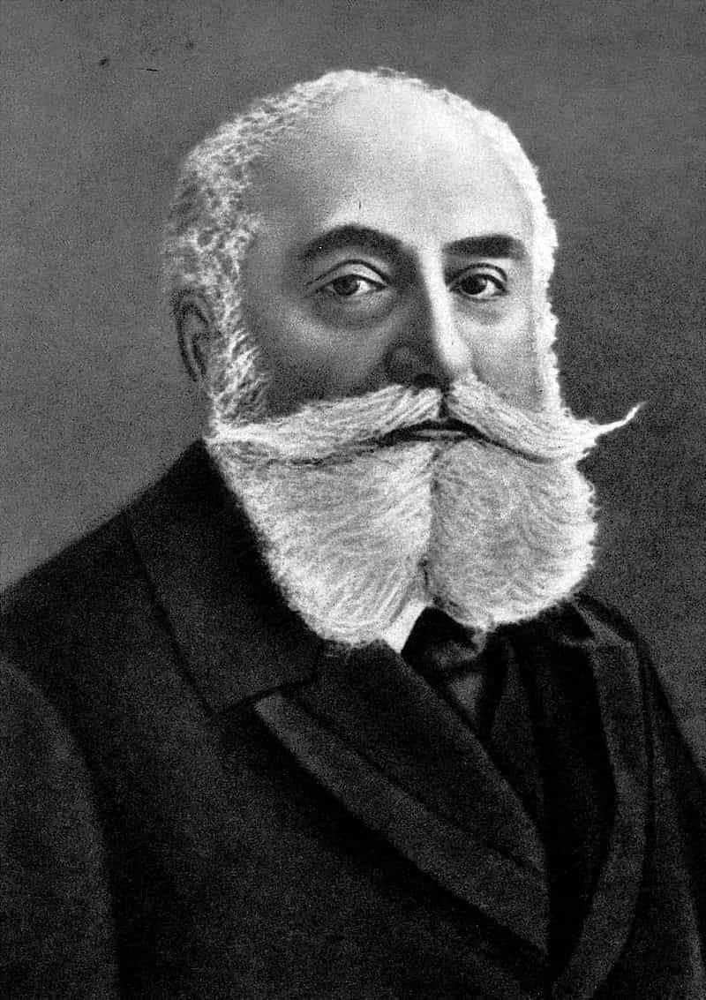
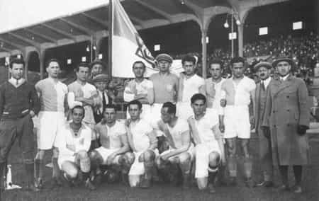

Several articles on this website pertain to how weak, effeminate, and ineffectual modern religion is, particularly Christianity, and that’s certainly true, but what if I were to tell you that this crisis of effeminate religion has already occurred, and physical culture was a major weapon in combating this?
The 19th Century Crises of Abrahamic Religion
For the purposes of this article, we’ll be looking at two concurrent “muscular religion” movements that emerged in the 19th century: Muscular Christianity and Muscular Judaism.
Muscular Christianity began as a reaction to a problem that will seem very familiar to a lot of you: in the 18th and 19th centuries, the attendance of Christian churches (in particular Protestant Churches) was heavily skewed towards a female audience—and this was almost entirely caused by the practice of preachers at that time.
As other articles on this site have pointed out, Christianity is not inherently an effeminate religion, but the practice of it, then as now, is inherently womanly: concepts such as bridal mysticism—a medieval conception essentially conceiving of the worshiper as the consort or lover of Christ, created largely by female mystics such as Mechthild—led to an increasing feminization of the religion and more women being drawn to it. The church would respond by catering further to that audience, and the cycle would repeat. It seems that, then as now, the church has always partially been a business. Note that even today, much ecclesiastical language refers to “being in love with Jesus” or the like.
Realizing that this language was utterly failing to connect to masculine men, various social reformers throughout the Anglosphere sought to inject a small portion of the “barbarian virtues”, in Theodore Roosevelt’s parlance, back into Christianity, to combine the gentle virtues and ethics of religion with a masculine physicality, camraderie, and honor. Thus we see in the 19th century the flowering of sporting organizations such as the YMCA, as sporting, particularly team sports, were seen as a way to cultivate both the masculine and feminine virtues that would create a well balanced worshiper. In the words of Thomas Hughes, of Tom Brown’s Schooldays fame…
…a man’s body is given him to be trained and brought into subjection, and then used for the protection of the weak, the advancement of all righteous causes, and the subduing of the earth which God has given to the children of men.
From The New Testament To The Old
Not to be outdone by the gentiles, Muscular Judaism arose roughly around the same time, with a broadly similar goal; while Muscular Judaism did not have the same imperialist/missionary undertones that Muscular Christianity had, the goal was still to cultivate the mental and physical properties to revive the nation of the Jewish people in the long term and more immediately to counter the stereotype of the Jews as a weak and dyspeptic people that is still common in anti-Semitic depictions.
For both religions, the idea was to combine the ethics of the religion with a “barbaric” masculinity, and a partial emphasis on sports and physical culture in addition to the liturgical teachings.

Max Nordau, coiner of the term “Muscular Judaism” and the possessor of a truly virile set of facial hair
The Religious Argument
In both cases, it should be pointed out that opinion was hardly universal in the need for this—many religious leaders felt that focusing so much on the body was a pointless distraction from the truly important (the spiritual). However, bear in mind that the paradox of having a religious component to physical fitness, the most pagan of disciplines, was always seen as a compromise rather than religiously “pure”.
Indeed, it seems to me that the whole idea was something of a lesser evil, that it was better to have slightly barbaric men in a slightly barbarized church, then have masculine men eschew the church completely and turn to crime and degeneracy.
Indeed, I’ve always argued the same: that despite it’s inherent primalism, from strength and vigor come all things, including the gentle virtues— and both me and the 19th century “church fathers” would likely agree with its necessity as a foundation before said gentler virtues were created.
Or to put it in the parlance of the YMCA, the harmonization of mind, body and soul, as represented by the inverted red triangle logo. Indeed, that seems to be a fair approximation of the goals of neomasculinity.
Implications for Today
As some have pointed out, the culture of today doesn’t really engender much love of religion, and even those who are against the rampant degeneracy of the current zeitgeist don’t seem to be effective in rescuing those flagging church attendance numbers. Indeed, the overwhelming majority of Christian denominations today are basically hemorrhaging attendees—and who can blame them? They have essentially turned into, as a former ROK writer put it, “service industries for women“.
I’m not a religious man myself, but the Muscular Religion approach can be effective: Jews were soon over-represented in Austria-Hungary’s Olympic teams and church attendance soared amongst men for a good half century. If you want to give rebirth to masculinity—and undoubtedly we all do—an emphasis on physical culture seems to me to be as good as any a place to start, and if masculinity could be encouraged and reborn in a more religious age, I don’t see why it can’t be done in this less religious age as well.
As a side note, those worried about the rise of anti-Semitism might want to encourage a rebirth of Muscular Judaism amongst the Chosen People—certainly I think the Nordau types would be much more respected than the cavalcade of modern American Jews who seem intent on embodying so many of the negative stereotypes of their people.

Just speaking offhandedly, I highly doubt that the members of, say, the Hakoah Vienna athletic club would be the sorts of Jews promoting “poz” and degeneracy
No matter what religion you are, you can diligently train yourself, and encourage others to do the same, and encourage them to embrace the masculine virtues. If they could do it in the 1800s we can do it now.
Read More: Will Neomasculinity Create A New Patriarchal Religion?